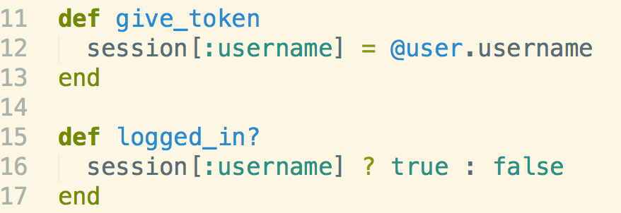
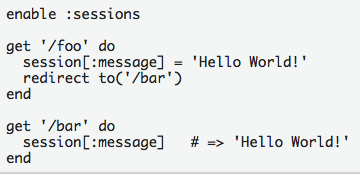
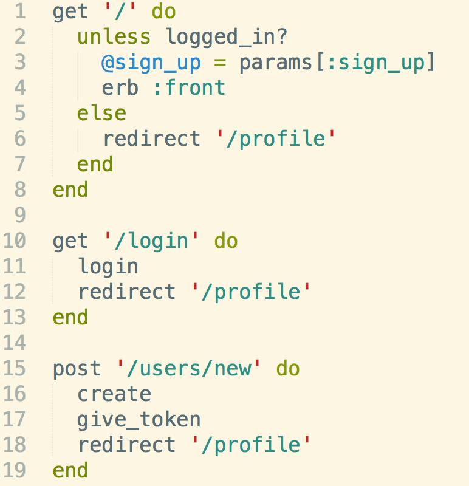
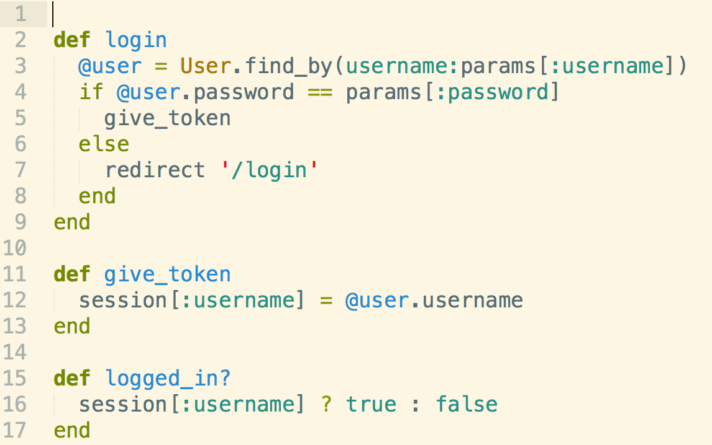

Background
Today I had a chance to work on a team to implement a clone of twitter using Agile development(Postit notes and storyboards and such...). During one of our standups, Ori gave an explanation on how he implemented a gem in creating a login/signup page. These are the concepts he described in making the gem work.
BCrypt
BCrypt is a gem that allows developers to quickly implement authentication and authorization to disallow access to your web app to users who haven't signed up.
Session
A session is basically a cookie that stores information on the user. It's what allows users to switch routes in your web application w/o constantly having to sign-in(since HTTP is user agnostic.). You can use sessions in multiple ways, but the usual way would be to set a session to the attribute of a model instance. Here's an example of a session in a helper file. give_token sets a session to the attribute of @user(which is a new model instance) and logged_in is a helper method that will be called upon GET routes in your controller(for authorization)
 You need to somehow allow sessions to be used in your controller. Here is one possible way. Authentication
Authentication is the process of answering "Who are you"
Authorization
Authorization is the process of answering "What do you have permission to do?" A user can only see a web app if they are authorized(aka logged in). The login process itself is the authentication. Below are examples of how you would set an authentication and authorization from controllers using helper methods and sessions.
Try to figure out the Authentication and Authorization routes above, as well as how sessions play into this.
Here's the link to a corresponding helper file.